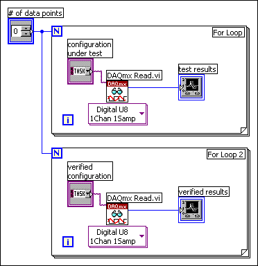
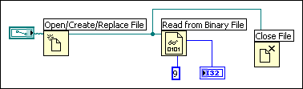
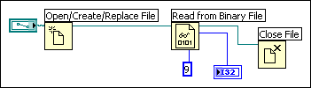

LabVIEW follows a dataflow model for running VIs. A block diagram node executes when it receives all required inputs. When a node executes, it produces output data and passes the data to the next node in the dataflow path. The movement of data through the nodes determines the execution order of the VIs and functions on the block diagram.
Visual Basic, C++, JAVA, and most other text-based programming languages follow a control flow model of program execution. In control flow, the sequential order of program elements determines the execution order of a program.
In LabVIEW, the flow of data rather than the sequential order of commands determines the execution order of block diagram elements. Therefore, you can create block diagrams that have simultaneous operations. For example, you can run two For Loops simultaneously and display the results on the front panel, as shown in the following block diagram.

LabVIEW is a multitasking and multithreaded system, running multiple execution threads and multiple VIs simultaneously.
The control flow model of execution is instruction driven. Dataflow execution is data driven, or data dependent. A node that receives data from another node always executes after the other node completes execution.
Block diagram nodes not connected by wires can execute in any order. You can use flow-through parameters to control execution order when natural data dependency does not exist. You can use a sequence structure to control execution order when flow-through parameters are not available.
Do not assume left-to-right or top-to-bottom execution when no data dependency exists. Make sure you explicitly define the sequence of events when necessary by wiring the dataflow.
In the following block diagram, no dependency exists between the Read from Binary File function and the Close File function because the Read from Binary File function is not wired to the Close File function. This example might not work as expected because there is no way to determine which function runs first. If the Close File function runs first, the Read from Binary File function does not work.

The following block diagram establishes a dependency by wiring an output of the Read from Binary File function to the Close File function. The Close File function does not run until it receives the output of the Read from Binary File function.

Flow-through parameters, typically a refnum or error cluster, return the same value as the corresponding input parameter. Use these parameters to control execution order when natural data dependency does not exist. By wiring the flow-through output of the first node you want to execute to the corresponding input of the next node you want to execute, you create an artificial data dependency. Without these flow-through parameters, you must use sequence structures to ensure that data operations take place in the order you want.
Dataflow execution makes managing memory easier than the control flow model of execution. In LabVIEW, you do not allocate memory for variables or assign values to them. Instead, you create a block diagram with wires that represent the transition of data.
VIs and functions that generate data automatically allocate the memory for that data. When the VI or function no longer uses the data, LabVIEW deallocates the associated memory. When you add new data to an array or a string, LabVIEW allocates enough memory to manage the new data.
Because LabVIEW automatically handles memory management, you have less control over when memory is allocated or deallocated. If a VI works with large sets of data, you need to understand when memory allocation takes place. Understanding the principles involved can help you write VIs with significantly smaller memory requirements. Minimizing memory usage as you develop can help you increase the speed at which VIs run.